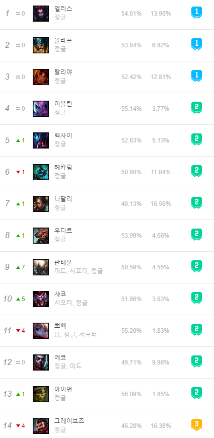

게임에 들어가보면 탑, 미드, 바텀 그리고 정글 라인이 있다.
이곳에서는 정글에 관해서만 집중적으로 탐구해볼 것이다.
정글은 명실상부 최강의 영향력을 가지고 있다 할 수 있다. 그 이유는 정글의 위치적 영향 때문이다, 정글은 각 라인 사이사이에 위치되어있다, 그렇기 때문에 정글은 각 라인에 간섭하기 가장 쉬운 라인이자 각 라인이 간섭하기 가장 쉬운 라인이다.
사실 어느 라인에 오는 챔피언이 딱딱 정해져있는 것은 아니라지만 유독 정글에서만 자주 보이는 챔피언이 있다.
위 사진본은 2021-01-24기준으로 캡처한 정글 1티어의 사진이다. 위 챔피언들의 특징은 두가지가 있다. 바로 강력한 cc기가 있거나, 1vs1이 매우 강력하다는 것이다. 그 이유는 cc기를 통하여 갱킹을 가거나, 강력한 1vs1능력을 바탕으로 상대의 정글캠프를 훔치는 일명 카정이라는 것에 안정성을 주기 위한 것이다.